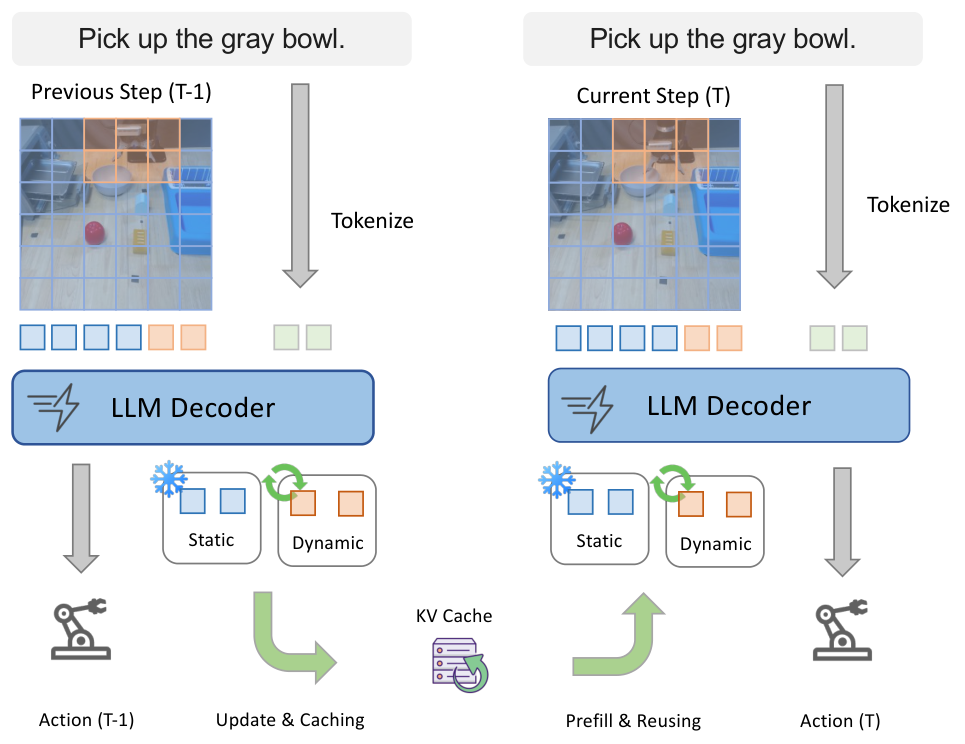
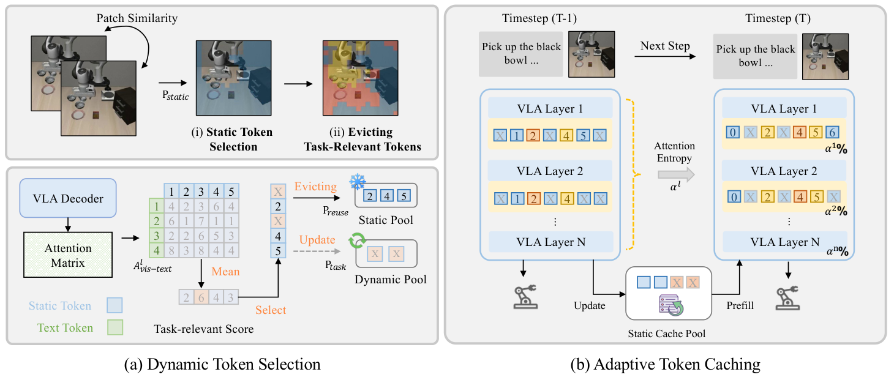

论文信息
| 作者 | Siyu Xu、Yunke Wang、Chenghao Xia、Dihao Zhu、Tao Huang、Chang Xu |
|---|---|
| 机构 | University of Sydney；Shanghai Jiao Tong University |
| 发表 | NeurIPS 2025；早期版本为 arXiv:2502.02175 |
| 一句话 | 以跨控制步的视觉 token 相似度决定哪些历史 KV 可以复用，再用任务相关性和层级注意力熵阻止关键 token 被错误缓存。 |
1. 核心摘要
VLA 模型在闭环机械臂控制中需要不断将当前图像、指令送进视觉语言主干并生成下一步动作。相邻控制步的环境往往高度相似，但传统 VLA 会将每一帧的视觉 token 全量 prefill，使语言 decoder 的注意力计算反复覆盖静态背景。VLA-Cache 的研究问题因此不是如何压缩一次推理，而是如何安全地把上一个控制步的视觉 KV 延续到下一个控制步。
方法先以 patch 像素相似度挑选视觉上静止的 token；再以 decoder 的 text-to-vision attention 找出即使静止也和指令/动作密切相关的 token，将其从复用集合中剔除；最后依各层 attention entropy 调整复用比例。它不训练模型、不改 VLA 权重。论文在 LIBERO、SIMPLER 及真实 Kinova Jaco2 上验证：相对标准 OpenVLA，LIBERO 平均成功率仅从 75.0% 到 74.7%，CUDA latency 由 51.91 ms 降至 31.83 ms；论文总体报告最高约 1.7× latency speedup 与 15% control-frequency 提升。
2. 研究动机
闭环控制使相邻观测冗余，但不能简单删 token
VLA 的输入不是独立图像，而是随控制循环到来的相邻观测。背景、桌面和多数物体在相邻帧之间不变，因此重新计算这些 token 的 K/V 是冗余的。另一方面，机器人任务对细微状态十分敏感：夹爪、目标物或接触区域可能像素变化很小，却会改变动作。论文强调，视觉静止不等于对任务不重要。

原论文动机图，来自 arXiv LaTeX 源码 fig/motivation.pdf；网页展示版本为本地 PNG，原始 PDF 同目录保留。图中说明静态视觉 token 可跨控制步复用 KV。
已有加速策略与 VLA 的错位
量化、剪枝、早退或单帧 token sparsification 通常降低整个模型或单帧上下文的计算，却没有利用机器人视频流的跨帧重复。它们还可能删除空间上很小、但操控上关键的区域。VLA-Cache 的切入点是把缓存选择放在“当前帧相对上一帧”的变化上，并用模型自身注意力再做任务相关性保险。
与历史关键事件检测的关系
这篇论文的目标是推理加速，不是保存长期语义记忆；它复用的是上一帧的中间 KV，而非把事件写入可检索的 episode memory。不过，它提供了一个关键接口：事件检测器可将 token 的命运显式划分为 reuse、refresh 与 commit。VLA-Cache 研究前两类，而本课题可以在关键状态转移时增加第三类长期写入。
3. 方法论

原论文 Fig. 2，来自 arXiv LaTeX 源码 fig/method.pdf。左：Dynamic Token Selection；右：Adaptive Token Caching。原始 PDF 同目录为 method-original.pdf。
3.1 从标准 KV cache 到跨帧视觉 KV
标准自回归 Transformer 对输入 X 计算 Q=XWQ、K=XWK、V=XWV，以 Softmax(QK⊤/√d)V 完成注意力。普通 decoding 会把新 token 的 K/V append 到同一请求的 cache，但 VLA 在每个控制步通常重新送入视觉 token。VLA-Cache 将前一时刻视觉 token 的 K/V 视为可选的跨帧 cache：只有被判定为可复用的 token 才沿用 Kt−1,Vt−1；其余 token 用当前表征重新计算。
3.2 Dynamic Token Selection：先以像素相似度提出静态候选
当前图像与前一帧都被切为非重叠 patch。对应 patch Pti,j 与 Pt−1i,j 的余弦相似度为：
Sim(Pti,j, Pt−1i,j) = (Pti,j · Pt−1i,j) / (||Pti,j||₂ ||Pt−1i,j||₂)。
相似度超过阈值 τ 的 patch 进入候选，再经 Top-k 保留最稳定 token，形成 Pstatic。这是廉价的运动/外观变化门，但它只回答“是否看起来不变”，不能判断该区域是否仍是本步动作的关键证据。
3.3 Evicting Task-Relevant Tokens：从静态候选中剔除语义关键区域
论文从 decoder attention 中取 text-to-vision 子矩阵，在 head 维平均得到每个视觉 token 的注意力，再对选定层平均，形成任务相关性分数 Stask-relevance。高于阈值 τtask 的 token 构成 Ptask-relevant；最终可复用集合是：
Preuse = Pstatic \ Ptask-relevant。
这一步对应论文最重要的安全机制。Table 1 显示，仅按静态 token 复用会使 LIBERO-Spatial 的 OpenVLA 成功率从 84.4% 降到 74.2%；剔除任务相关 token 后恢复到 82.6%。因此，像素相似性可作为候选信号，但不能独立承担缓存或记忆更新决策。
3.4 Adaptive Token Caching：不同 decoder 层采用不同复用率
论文观察到 attention 在各 decoder layer 的集中程度不同。它以 attention entropy 衡量层内分布，并依据相邻层 entropy 的变化为每层设定复用率 αl。集中、敏感的层保留更多 current-step 更新，较分散的层可复用更多静态 cache。对每层每个 token：若在该层被选入复用子集，则令 Ktl(i)=Kt−1l(i)、Vtl(i)=Vt−1l(i)；否则从当前 Htl(i) 经投影重新计算 K/V。
3.5 训练与部署流程
VLA-Cache 是 training-free、plug-and-play 的推理时方法：模型在训练后保持冻结。每一控制步接收当前帧，利用前一帧与前一缓存选出可复用 token，更新各层 KV 后再生成动作。第一个控制步没有历史 cache，需完整 prefill；观察剧烈变化时，可复用 token 自然变少、加速收益下降。论文并没有把跨 episode KV 当长期记忆保存，也未声称其提供历史任务状态推理。
4. 实验与结果
实验设置。论文评估 OpenVLA 与 OpenVLA-OFT 的 LIBERO Spatial/Object/Goal/Long 四组任务，CogACT 在 SIMPLER 的 Visual Matching 与 Variant Aggregation 两种设置，以及 Kinova Jaco2 真实机械臂的 PickPot、PlaceCube、PutSausage、WipeTable。指标包括成功率（SR）、FLOPs、CUDA latency 和控制频率；实验使用 RTX 4090。
| 原文表格 / 条件 | 基线 | VLA-Cache | 解读 |
|---|---|---|---|
| Table 2，OpenVLA / LIBERO 平均 | SR 75.0%；1.864 T FLOPs；51.91 ms；4.23 Hz | SR 74.7%；1.355 T；31.83 ms；4.59 Hz | 成功率仅低 0.3 个百分点，而 CUDA latency 约缩短 1.63×。 |
| Table 2，OpenVLA-OFT / LIBERO 平均 | SR 96.8%；79.05 ms；65.10 Hz | SR 97.4%；62.59 ms；78.98 Hz | 对已使用 action chunking 的快速 VLA 仍有叠加收益。 |
| Table 3，CogACT / SIMPLER Matching | SR 74.8%；54.29 ms；12.42 Hz | SR 74.4%；39.63 ms；14.66 Hz | 方法不依赖 OpenVLA 的单一 action head。 |
| Table 5，真实机器人四任务平均 | SR 82.1%；1.814 T；64.16 ms；4.02 Hz | SR 84.6%；1.303 T；51.85 ms；4.21 Hz | 真实系统中平均 SR 高 2.5 个百分点，论文归因于减少冗余视觉干扰。 |
关键消融：为什么必须同时有两层过滤
Table 1 的 OpenVLA / LIBERO-Spatial 消融最能说明设计因果：baseline 是 84.4% SR、51.56 ms；只复用静态 token 为 74.2%、31.03 ms；加入 task-relevant eviction 后为 82.6%、31.03 ms；再加入 layer-adaptive strategy 后为 83.8%、32.22 ms。也就是说，主要加速来自跨帧 token reuse；任务相关性过滤收回了大部分精度，而层自适应以很小 latency 代价进一步改善精度。
Table 4 还显示激进复用会伤害控制：在 256 个 vision token 的 LIBERO-Spatial 上，复用 100 token 时 VLA-Cache 为 83.8% SR、31.29 ms；复用 200 token 时降至 68.3% SR，即使 latency 为 30.29 ms。这是对历史记忆系统的重要警告：缓存预算或事件压缩率必须以任务错误代价约束，不能只追逐 token 数。
5. 优势与局限
| 优势 | 局限 / 迁移注意点 |
|---|---|
|
|
6. 总结
VLA-Cache 将 KV cache 从“单次生成的内部优化”扩展到“相邻控制步之间的跨帧复用”。其最值得借鉴的不是固定的相似度阈值，而是三段式判定：视觉上静止的 token 先成为候选，语言/任务相关 token 被强制刷新，不同 decoder 层再按敏感度调节复用比例。
对 VLA 历史关键事件检测，建议把该机制作为短期层：平稳期间最大化 reuse，局部状态变化触发 refresh；当 motion、appearance 与 robot state 同时确认状态转移时，再把相应关键帧或压缩 KV commit 到长期事件记忆。这样既不把每一帧都写成长历史，也不会把静态但任务关键的对象错误冻结。
图像来源与核验
本页图像均来自 arXiv LaTeX 源码：fig/motivation.pdf 与 fig/method.pdf。网页使用由原 PDF 渲染的 PNG，并保留原始 PDF；已逐图检查，图中不含页面正文、页眉页脚、页码或 PDF 排版 caption。实验结果严格采用文字与 HTML 表格，没有实验图片。